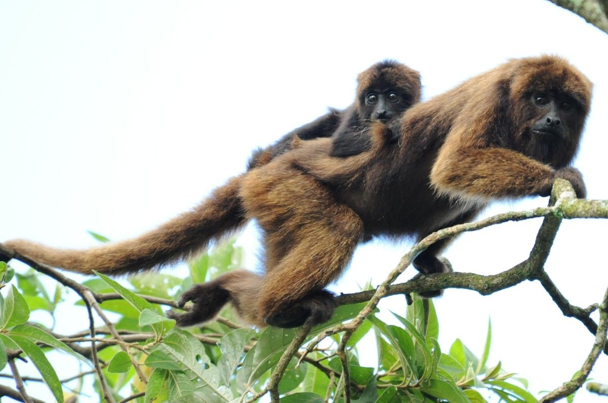

Apelagem dos bugios é longa, variando de coloração devido a diferenças individuais, de idade e sexo.
Na espécie Alouatta guariba o macho geralmente é marrom avermelhado com reflexos dourados e a fêmea é mais escura, quase preta, assim como os jovens.
A voz do bugio é marcante (serve, entre outras utilidades, como defesa porque espanta o inimigo). Possui larga expansão do ângulo da mandíbula e grandedilatação do osso hióide - entre a laringe (tubo cartilaginoso da garganta) e a base da língua -, o qual funciona como caixa de ressonância. Essa caixa
amplifica a voz do bugio como a caixa do violão amplifica o som de suas cordas. O som emitido é rouco e forte, podendo ser ouvido a longas distâncias. Outra característica marcante dos bugios é a presença de uma espessa barba que rodeia a face, nos machos ela é mais evidente. Possuem cinco dedos providos
de unha, olhos grandes com pálpebras bem desenvolvidas e posicionados à frente da face. Os membros são curtos e fortes. A cauda preênsil, longa e peluda,
a parte terminal, do lado interno, nua, é usada como quinto membro. A posição do grande polegar oponível, tanto nos pés como nas mão, facilita a locomoção
nas árvores e a manipulação do alimento.
